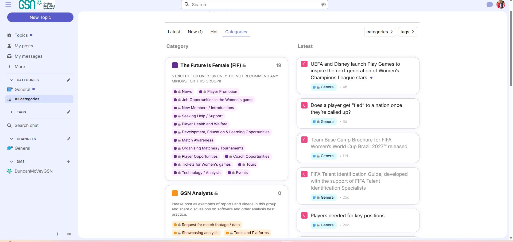

Player health & ACL injuries
Best practices for prevention, rehabilitation, and the impact of menstrual cycles on injury risk in the women's game.
Our conversations live on Discourse — trusted by the network you already know. Read threads, follow topics, and join the debate on scouting, analysis, coaching and the business of women's football.
Browsing is open to everyone. To post or follow topics you'll need a free GSN account.

This image is illustrative — interaction is disabled here. Use the Members — go to Discourse link above for the live experience.
A snapshot of the topics our community has been working through.
Best practices for prevention, rehabilitation, and the impact of menstrual cycles on injury risk in the women's game.
Africa-to-Europe routes, academy structures, scout qualifications, and the FA's role in developing the women's game.
Wyscout / InStat data limitations for the women's game, video footage access, and scouting platform gaps.
Equal pay, equal investment, equal opportunity — and what federations should be doing differently.
Live attendance trends across the top five leagues, broadcast rights, and the digital growth of women's football.
Player and coach opportunities, tournaments, courses, and roles posted by members across the network.